The Button is a component that you will use a lot with Jetstrap. You click it and it does stuff.
The Button component can link to other screens to create interactive designs, or it can trigger a Javascript event, or link to an external page.
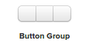
Button Group is used to group a set of related buttons. Each button of the group is a Button and can be edited as it is (and you can add more buttons just by draging and dropping other Buttons in).
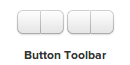
If you want to have a series of Button Groups in sequence, you can do this by using a Button Toolbar. This is useful if you have a function bar in your application, for example.
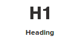
The Heading component is used to insert titles and headings in your Jetstrap designs. You can choose among the 6 standard levels of HTML headings.
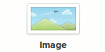
You can insert images in mockups with the Image component. By default, Image has a default value, but it's possible to upload new images or link to an external image.
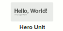
Hero Unit on Twitter Bootstrap is a large area used to place emphasis some content. By default, it looks like this:
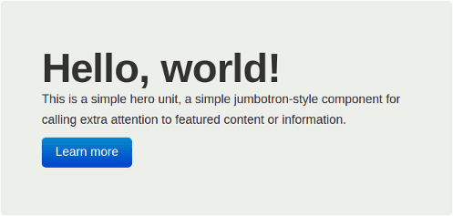
Hero units can contain any kind of elements, though generally you want a call to action with some detail text and a button to guide a user through your signup funnel.
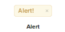
An Alert is used to display some important content that grabs the eye. Alerts come in several different styles:
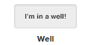
In Twitter Bootstrap, the Well is a container with an inset look. It’s often used to group less important content, and it can contain any other component.
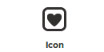
Twitter Bootstrap has an excellent set of icons that you can use in your projects. Jetstrap allows you to use these icons through the Icon component.
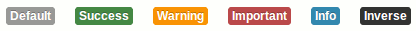
Tag Labels in Twitter Bootstrap are often used to “tag” content with meta data. A label can have different styles:
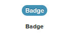
The Badge component resembles the Tag Label. However, it’s normally used to display quantitative information (for example, number of new messages).
But the world is your oyster, and you can use it as your little heart desires. The Badge comes in several flavors:
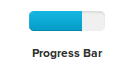
With the Progress Bar you can insert a standard progress bar in your designs in a variety of colors and styles:
The Progress Bar has several properties that you can configure:
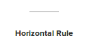
The Horizontal Rule is used to insert a divider line (it’s the famous
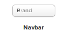
The Navbar is the classic bootstrap header bar that shows your brand, complete with navigation links and other content (such as a form) that you might want to display in a header or footer. You can fix the Navbar to the bottom or top of your page, or have it sit directly in the flow of your document.
The Navbar comes in two flavors:
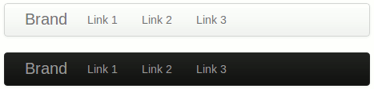
Navbar properties:
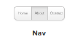
The Nav component is is a versatile component that can be used to show tabs, a list of links in a Navbar, or a set of “pill” links. It can also be shown in a horizontal or vertical stack:
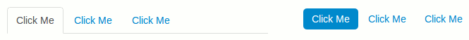
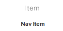
The Nav Item can be used to add a new link to a Nav or to just add an
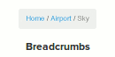
Breadcrumbs are used to help Hansel find his way home in the forest. Imagine your user is Hansel and they navigated to a random page on your site. The Breadcrumbs will help them find their way home.
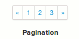
The Pagination component can be used to show what page you are on in a set of pages.
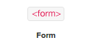
The Form component by itself does nothing, but combined with other form controls it takes on a magical existence.
Drag some text inputs in, a select box, and some other controls, and you’ve got a powerful way to submit data to a server.
The core properties for a form component are
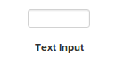
The Text Input component is primarily used in text form fields and search boxes. With the power of HTML5, this component can process a huge variety of input content. The available types are:
Like most form components, the Text Input comes with a "companion component": the Input Label.
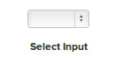
The Select Input is another component used in a Form to display a dropdown menu. File Input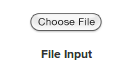
The File Input component lets a user select a file for uploading (you need to implement the uploading stuff on your own).
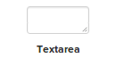
The Textarea component is a simple textarea element used in a Form.
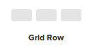
To understand the Grid Row component you need to understand how the grid system of Twitter Bootstrap works. Grids are a core feature of bootstrap and you will use them often.
The grid has these important properties: